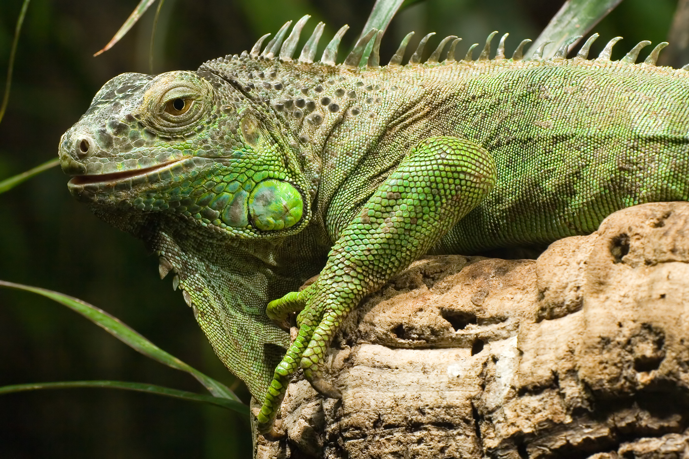

Iguana

Características
A Iguana é um réptil que habita regiões tropicais da América, vivem principalmente em áreas florestais, ela vive
em árvores, se alimentam de insetos, pequenos roedores, frutas,vegetais e algumas flores, ela vive em média de 10 a 13 anos, pode atingir 170 cm de comprimento
essa espécie é ovípara, possuem grandes habilidades como a sua visão que enxerga objetos a distância e se comunicam com outras iguanas através de sinais visuais.
Classificação Cientifica
| Reino |
Animalia |
| Filo |
Chordata |
| Classe |
Reptilia |
| Ordem |
Squamata |
| Subordem |
Sauria |
| Família |
Iguanidae |
| Gênero |
Iguana |
Quanto custa uma Iguana?
Encontrar uma Iguana para vender é difícil, pois somente criadouros licenciados pelo IBAMA podem comercializar o animal, mas não vá cair em golpes, a Iguana comprada já tem que ser legalizada, não tem como legalizar depois, quando vindas do criadouro já são legalizadas, Porém em São Paulo é Proibido.
Bibliografia
- Toda Biologia - Iguana
- Portal Pets - Onde Comprar uma Iguana legalizado